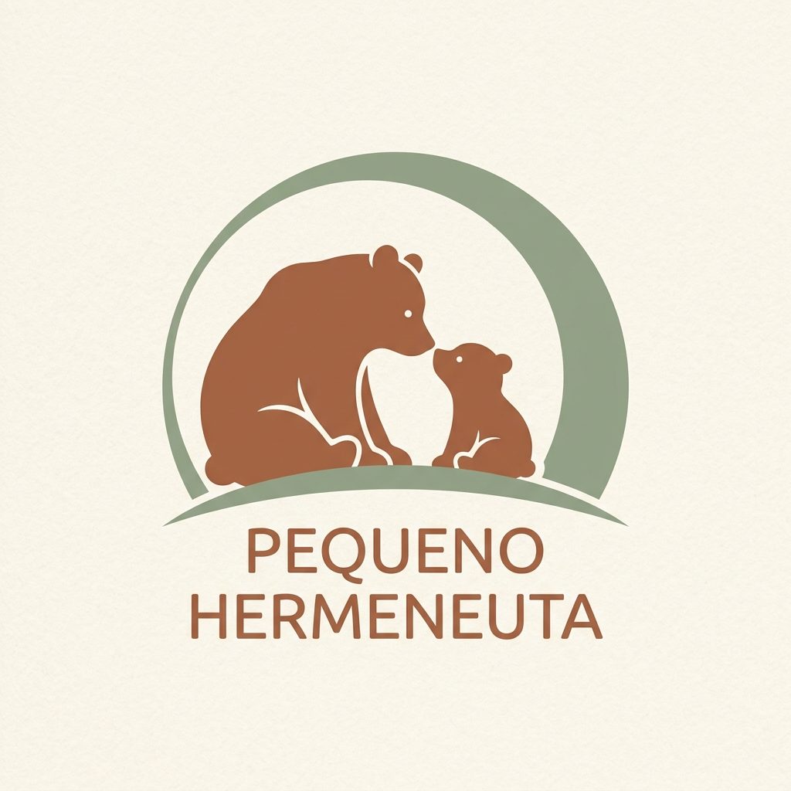
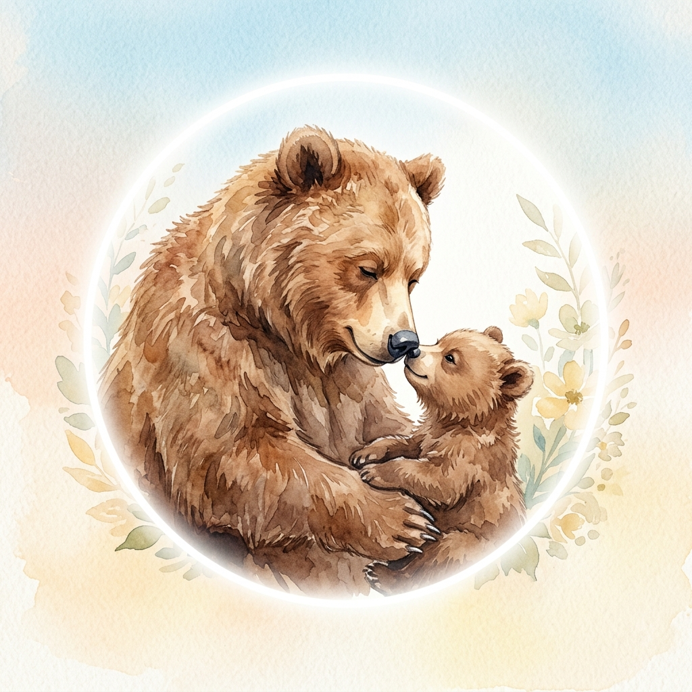

Pequeno Hermeneuta"Antes de tu nasceres, havia uma saudade em mim." Um selo dedicado a criar rituais de leitura afetiva e reflexão profunda sobre os mistérios da existência para os pequenos.
Ilustrações primorosas e um guia prático de mediação na contracapa para transformar a leitura compartilhada em um momento inesquecível de escuta e conexão.
Comprar Livro Físico
Construímos livros sob três pilares que respeitam a inteligência emocional e racional da criança.
Abordamos temas profundos (a ausência, o tempo, a saudade, o infinito) de forma poética, laica e socrática, sem respostas dogmáticas prontas.
Entenda o conceito de assombro →Todos os nossos livros vêm equipados com um guia socrático de perguntas no apêndice, ajudando pais a conduzirem conversas naturais e profundas.
Ilustrações texturizadas e projeto gráfico primoroso feito para se conectar com a fisicalidade do livro impresso, longe das telas digitais.
Às vezes, sentimos um vazio no peito que nem as brincadeiras no jardim, o carinho da mãe ou o doce sabor do chocolate conseguem acalmar. É uma saudade sem nome, que nos faz procurar respostas na imensidão das estrelas e no fundo do mar. Uma viagem sensível sobre a doce espera por algo que — sem sabermos — já nos espera.
"E foi descobrindo-te e amando-te que finalmente compreendi: A saudade que sempre tive na vida era de ti."
Como usar nossos livros para criar conexão afetiva e presença real em 3 passos simples.
Leia a história sem pressa. Deixe o ritmo lírico das palavras e a beleza das imagens acolherem a criança.
Abra o guia socrático na contracapa do livro e escolha uma pergunta simples para abrir espaço ao diálogo.
Ouça com o coração, sem julgar ou tentar corrigir. Deixe a curiosidade e a sensibilidade da criança florescerem.